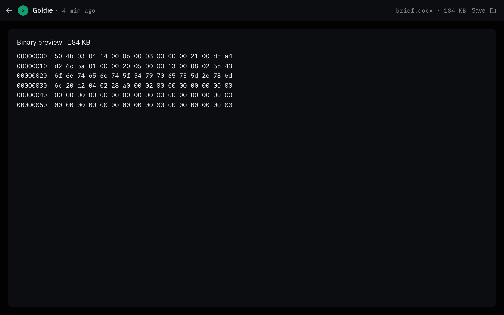
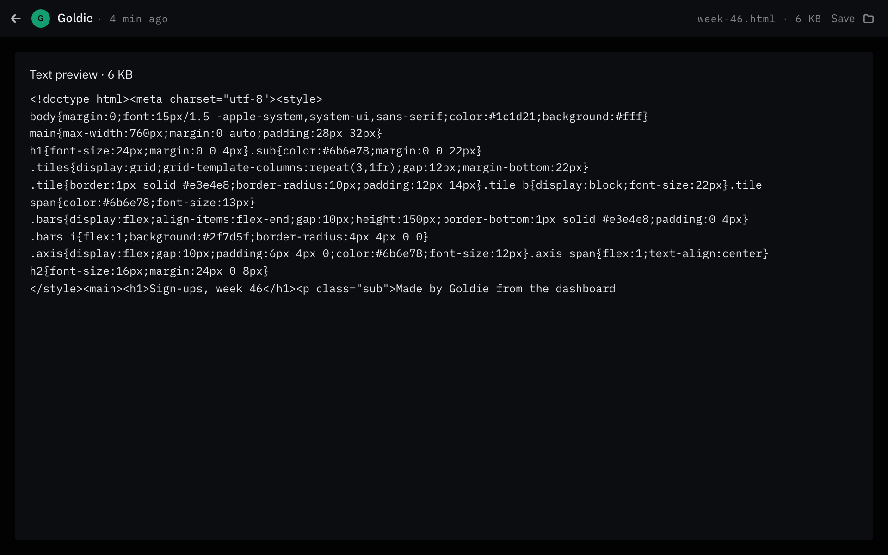
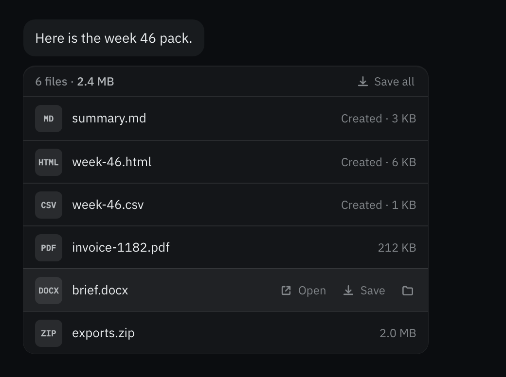
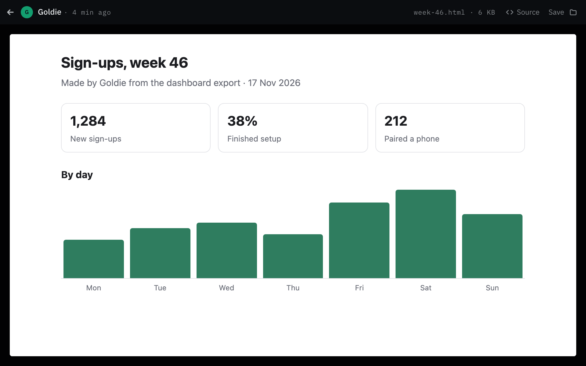
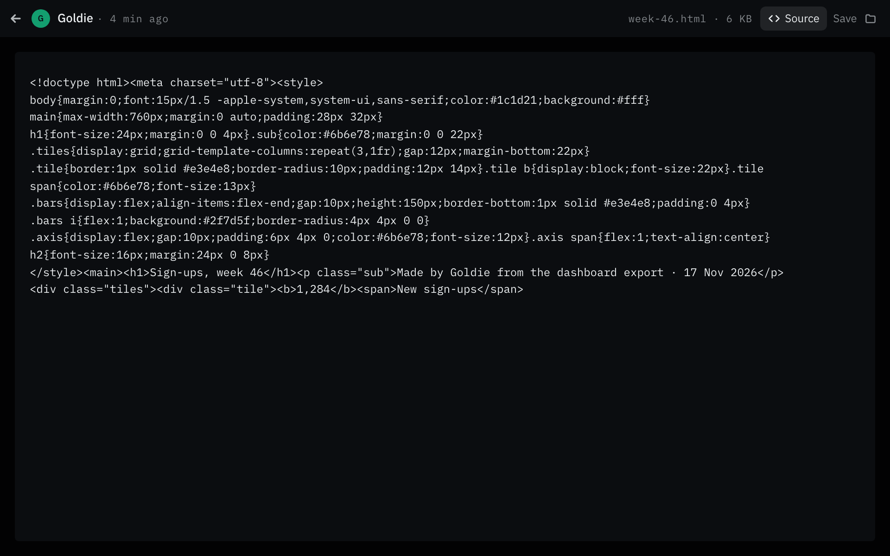
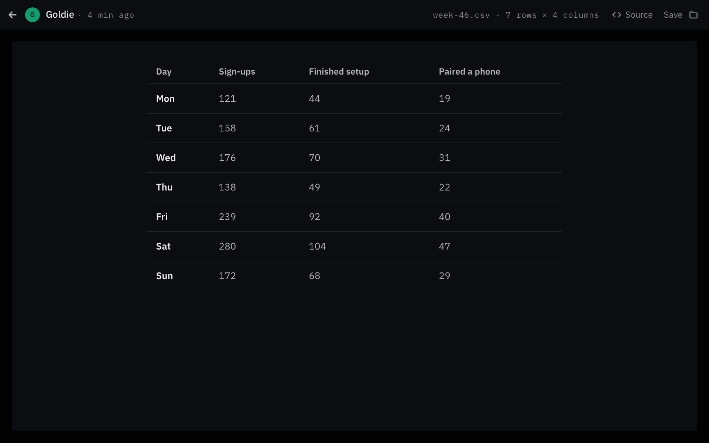

Opening documents on the desk
Today the desk renders Markdown and pictures, hands a PDF to the Mac’s viewer, and shows everything else as text or as raw bytes. The drawings below add HTML and CSV in the app, send Office files to their own app, and drop the raw bytes.
How to answer: pick under each choice and add a note where you want one. Click a picture to pin a note, or drag across it to draw a box. Press Done when you are finished. A choice left blank takes my pick. Nothing here is built.
Today

A Word file today. The first bytes of the file, sixteen to a line.

An HTML page today. Its source, as text.
Proposed

The rows. Nothing new is added to a row. Open on Markdown, HTML and CSV opens the viewer. Open on a PDF or an Office file carries an arrow, because it leaves Hotline for that file’s own app. A file Hotline cannot show has no Open: only Save and its folder, as on the zip.

An HTML page, rendered. The same band as Markdown, with the same Source key.

Source pressed. What you get today, one press away.

A CSV file. The table the app already draws for a Markdown table. The band says its rows and columns.
Where each kind opens
| Kind | Today | Proposed |
|---|---|---|
| Pictures | In the app | The same |
| Markdown | Rendered in the app | The same |
| HTML | Source as text | Rendered in the app, Source a press away |
| CSV | Text | A table in the app |
| Text and code | Text | The same |
| The system’s viewer | The same | |
| Word, Excel, PowerPoint | Raw bytes | That file’s own app |
| Anything else | Raw bytes | No Open. Save, or show in its folder |
The app decides a file’s kind from its first bytes as well as its name, as it does for a PDF today. A file named .docx that is not a Word file is treated as “anything else”.
The choices
CHOICE 1
Where an HTML page opens
MY PICK
Rendered in the viewer, in a frame that is cut off from the rest of the app. One piece of code for every teammate.
OR
In the teammate’s in-app browser. A real page with tabs and links, but built twice: once for the in-app browser and once for a teammate whose browser is in its computer.
OR
Leave HTML as source.
WAITS ON
One check, running now: that a page in that frame cannot call the app’s own commands. If it can, my pick changes to the browser.
CHOICE 2
What a rendered page may do
A page a teammate made can carry scripts. Charts and anything you click need them.
MY PICK
Scripts run. The page cannot reach the network or the app, so it can show you things and send nothing anywhere.
OR
No scripts. Safest, and interactive pages show up half-working.
OR
Scripts and the network. Pages that load fonts or charts from the web work, and a page could send out whatever is in it.
CHOICE 3
CSV as a table
MY PICK
A table in the viewer, with Source for the raw text. Past a few thousand rows it falls back to text, a page at a time.
OR
Leave CSV as text.
CHOICE 4
Word, Excel and PowerPoint files
MY PICK
Open hands the file to its own app. A fixed list: docx, xlsx, pptx. Never the macro-enabled kinds, and never by extension alone. On a server desk the file is brought down first, as a PDF is today.
OR
On the Mac, show it in Quick Look instead, which previews it without opening Word. Mac only; Windows and Linux would still use the file’s own app.
OR
No Open for these. Save, then open it yourself.
CHOICE 5
MY PICK
Stays in the system’s viewer for 0.50.
OR
Render it in the app. That needs a PDF library bundled into the window, on all three systems.
CHOICE 6
A file Hotline cannot show
MY PICK
The row has no Open, as on the zip above. The raw-bytes view goes.
OR
Keep Open, and it shows one line: “Hotline can’t show this kind of file”, with Save and the folder.
OR
Keep the raw bytes.
QUESTION
Where a PDF showed as binary
By the code, a real PDF a teammate sends already opens in Preview. If you saw one as raw bytes, say where you opened it from, and which teammate if you remember. Leave it blank if it was only Office files.